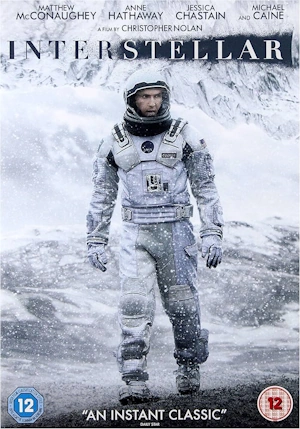
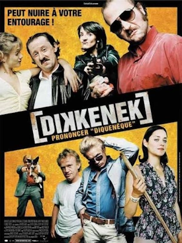
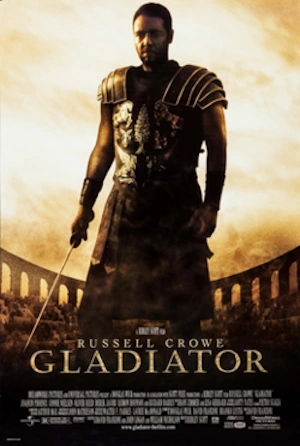

Liens directs: Mes Compétences - Mes logiciels maîtrisés - Mes sources techno - Mes passions
Je suis actuellement une formation pour l'obtention d'un titre professionel de niveau 2 en Développemement Web/Web mobile
Après un baccalauréat scientifique, j'ai suivi une formation de préparation aux concours polytechniques
J'ai mis fin à mes études en 2010 et suis parti vivre à l'étranger, où j'ai travaillé dans la restauration.
Lors de mon retour en France j'ai travaillé comme agent commercial dans l'immobilier.
À la suite du
COVID, j'ai changé de voie et je travaille désormais au sein d'un office de tourisme au maintiens de la donnée
du site internet.


